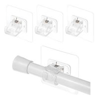
벽에 구멍 안 내고 끝 붙이는 커튼봉 홀더NEW3,910원 · 공구템 #136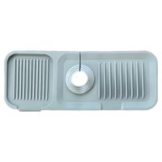
행주로 닦는 대신 이거 수도꼭지 물받이 매트6,390원 · 살림템 #131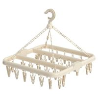
양말 건조대 대신 쓰는 접이식 양말걸이4,800원 · 살림템 #130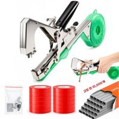
원예용 결속기 쓰는 이유 끈 매듭 없이 1초 고정29,900원 · 살림템 #135배수통 손 안 대고 쏙 접이식 싱크대 거름망11,300원 · 살림템 #134
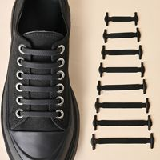
끈 묶는 대신 끼우기만 하는 실리콘 신발끈 16p4,900원 · 잡화템 #127화분에 병 꽂는 이유 테라코타 급수 스파이크14,070원 · 인테리어템 #129
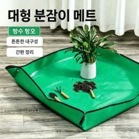
분갈이 매트vs신문지 흙 치우는 게 달라3,080원 · 인테리어템 #133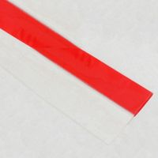
문 아래로 새는 찬바람 현관문 하단 틈막이3,200원 · 생활템 #132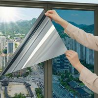
커튼 대신 붙이는 이유 창문 사생활 보호필름11,500원 · 인테리어템 #126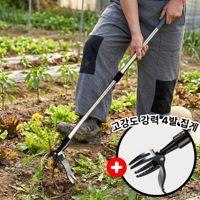
호미 대신 서서 쓰는 잡초 제거기12,900원 · 살림템 #125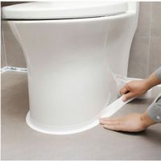
싱크대 틈, 코킹 대신 붙이는 방수 테이프8,900원 · 살림템 #123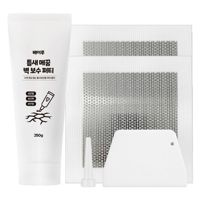
벽 구멍 업체 대신 이걸로 메쉬 패치 보수 세트10,350원 · 살림템 #120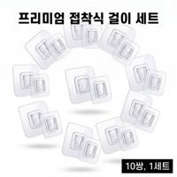
못 박기 대신 이거 쓰는 이유 무타공 접착 걸이3,000원 · 인테리어템 #119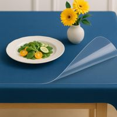
식탁 유리 대신 이거 쓰는 이유 투명 PVC 식탁 매트10,270원 · 인테리어템 #116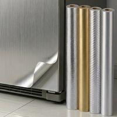
상판 바꾸는 대신 붙이는 스텐 헤어라인 시트지3,500원 · 인테리어템 #115낡고 얼룩진 냉장고·싱크대 문짝을 새로 바꾸기엔 돈이 많이 든다
10.20 기준 가격이에요. 지금 가격은 판매처에서 확인해 주세요.
이 포스팅은 네이버 쇼핑 커넥트 활동의 일환으로, 판매 시 수수료를 제공받습니다.
네이버에서 보기접지 않고 배낭에 거는 등산 스틱 고정 로프2,200원 · 레저템 #124
등산 스틱을 접어 배낭에 넣기 번거로워 걷다 쉴 때마다 손에 들고 다니게 된다
10.20 기준 가격이에요. 지금 가격은 판매처에서 확인해 주세요.
이 포스팅은 네이버 쇼핑 커넥트 활동의 일환으로, 판매 시 수수료를 제공받습니다.
네이버에서 보기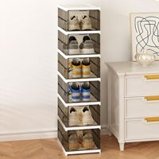
상자 열어 볼 필요 없는 투명 앞문 신발함33,420원 · 살림템 #121신발이 현관에 쌓여 신발장이 모자란다
10.19 기준 가격이에요. 지금 가격은 판매처에서 확인해 주세요.
이 포스팅은 네이버 쇼핑 커넥트 활동의 일환으로, 판매 시 수수료를 제공받습니다.
네이버에서 보기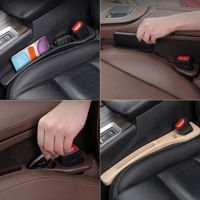
수납함 대신 틈을 메우는 차량 시트 틈새 쿠션9,900원 · 살림템 #118운전석·조수석 옆 시트 틈새로 폰·카드·동전이 빠져 꺼내기 어렵다
10.19 기준 가격이에요. 지금 가격은 판매처에서 확인해 주세요.
이 포스팅은 네이버 쇼핑 커넥트 활동의 일환으로, 판매 시 수수료를 제공받습니다.
네이버에서 보기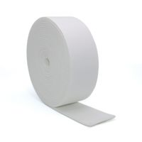
물방울 닦는 대신 붙이는 결로방지 물흡수 테이프4,900원 · 살림템 #117겨울 아침마다 창틀에 결로 물이 고여 곰팡이가 핀다
10.19 기준 가격이에요. 지금 가격은 판매처에서 확인해 주세요.
이 포스팅은 네이버 쇼핑 커넥트 활동의 일환으로, 판매 시 수수료를 제공받습니다.
네이버에서 보기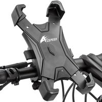
핸들 폰이 안 빠지는 이유 원터치 자전거 폰 거치대11,900원 · 레저템 #114울퉁불퉁한 길에서 자전거 핸들 폰이 흔들리다 빠진다
10.19 기준 가격이에요. 지금 가격은 판매처에서 확인해 주세요.
이 포스팅은 네이버 쇼핑 커넥트 활동의 일환으로, 판매 시 수수료를 제공받습니다.
네이버에서 보기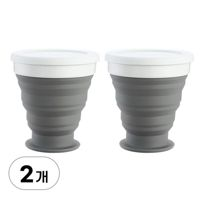
접어서 주머니에 넣는 이유 실리콘 접이식 컵9,800원 · 레저템 #112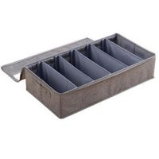
신발장 대신 쓰는 이유 접이식 신발 정리함22,870원 · 살림템 #111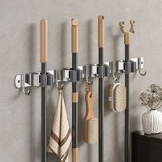
선반 대신 레일에 거는 청소도구 걸이대18,010원 · 공구템 #107차고·베란다 빗자루·삽·공구가 바닥에 쌓여 매번 쓰러진다
10.19 기준 가격이에요. 지금 가격은 판매처에서 확인해 주세요.
이 포스팅은 네이버 쇼핑 커넥트 활동의 일환으로, 판매 시 수수료를 제공받습니다.
네이버에서 보기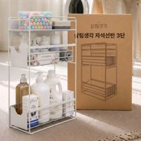
수납장 대신 냉장고 옆에 붙이는 슬라이딩 선반32,900원 · 살림템 #113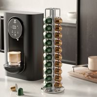
서랍 뒤적이기 말고 돌리기 커피 캡슐 회전 타워12,900원 · 인테리어템 #110캡슐 커피를 서랍에 쌓아 두면 원하는 맛을 찾느라 뒤적여야 한다
10.18 기준 가격이에요. 지금 가격은 판매처에서 확인해 주세요.
이 포스팅은 네이버 쇼핑 커넥트 활동의 일환으로, 판매 시 수수료를 제공받습니다.
네이버에서 보기천 깔개 말고 쓰는 이유 양면 가죽 책상매트6,900원 · 인테리어템 #108
식탁에 국물·기름이 튀면 닦고 또 닦는 게 번거롭다
10.18 기준 가격이에요. 지금 가격은 판매처에서 확인해 주세요.
이 포스팅은 네이버 쇼핑 커넥트 활동의 일환으로, 판매 시 수수료를 제공받습니다.
네이버에서 보기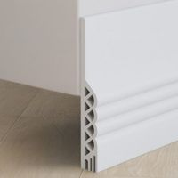
문 밑 찬바람 이거 하나로 접착식 문풍지 스트립11,610원 · 살림템 #104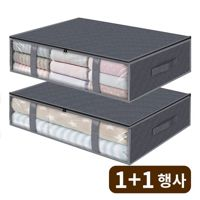
침대 밑을 상자 대신 채우는 접이식 수납가방19,800원 · 인테리어템 #105침대 밑 빈 공간은 쓰고 싶은데 이불·겨울옷을 넣어 둘 마땅한 수납이 없다
10.17 기준 가격이에요. 지금 가격은 판매처에서 확인해 주세요.
이 포스팅은 네이버 쇼핑 커넥트 활동의 일환으로, 판매 시 수수료를 제공받습니다.
네이버에서 보기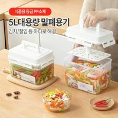
김치통 대신 쓰는 이유 누름판 김치 보관통16,500원 · 살림템 #109샤워 물이 쏙 빠지는 두 단 욕실 코너선반13,900원 · 인테리어템 #102
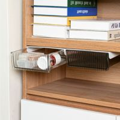
상판 밑 빈 공간 쓰는 이유 책상 밑 히든 서랍10,230원 · 인테리어템 #100책상 위 잡동사니가 상판 위에 계속 쌓인다
10.15 기준 가격이에요. 지금 가격은 판매처에서 확인해 주세요.
이 포스팅은 네이버 쇼핑 커넥트 활동의 일환으로, 판매 시 수수료를 제공받습니다.
네이버에서 보기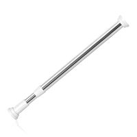
드릴 대신 이거 쓰는 이유 무타공 압축봉6,890원 · 인테리어템 #6불 피운 듯 일렁이는 벽난로 미니 가습기33,210원 · 가전템 #1
겨울밤 방이 건조해 가습기를 켜 두고 싶은데, 흔한 가습기는 밋밋하고 분위기 조명을 따로 켜야 한다.
10.14 기준 가격이에요. 지금 가격은 판매처에서 확인해 주세요.
쿠팡에서 보기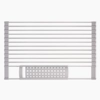
싱크대 위에 펼치는 실리콘 싱크롤 선반7,000원 · 살림템 #16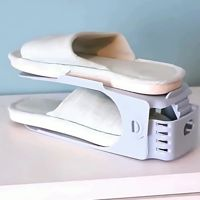
한 칸에 두 켤레 들어가는 신발장 슈즈렉6,355원 · 수납템 #4신발장 칸마다 신발이 한 켤레씩만 들어가 금방 꽉 차고 남는 신발은 현관 바닥에 쌓인다
10.14 기준 가격이에요. 지금 가격은 판매처에서 확인해 주세요.
이 콘텐츠는 토스쇼핑 쉐어링크 활동의 일환으로, 링크를 통한 구매가 발생하면 일정 수수료를 지급받습니다.
토스에서 보기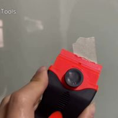
붙은 스티커 자국 어떻게 떼나 청소 스크래퍼5,310원 · 청소템 #6스티커·테이프 자국이 손톱으로 긁어도 안 떨어지고 칼로 긁자니 유리·타일에 흠집이 날까 걱정된다
10.14 기준 가격이에요. 지금 가격은 판매처에서 확인해 주세요.
이 콘텐츠는 토스쇼핑 쉐어링크 활동의 일환으로, 링크를 통한 구매가 발생하면 일정 수수료를 지급받습니다.
토스에서 보기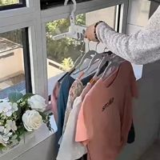
여행 가서 빨래 널 때 휴대용 접이 건조대1,840원 · 살림템 #14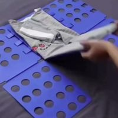
손으로 접던 옷이 같은 크기로 접혀요5,900원 · 생활템 #5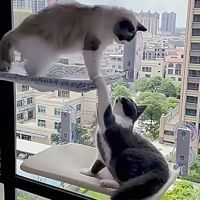
창가 자리 하나로 끝나는 고양이 창문 해먹12,900원 · 반려템 #17고양이가 소파와 식탁 위로 뛰어 올라가 쉴 높은 자리가 없고 창가 자리도 좁다
10.14 기준 가격이에요. 지금 가격은 판매처에서 확인해 주세요.
이 포스팅은 네이버 쇼핑 커넥트 활동의 일환으로, 판매 시 수수료를 제공받습니다.
네이버에서 보기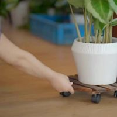
들지 않고 밀어서 옮기는 바퀴 달린 화분 받침17,900원 · 인테리어템 #5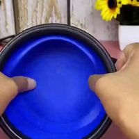
산책길 물그릇 어떻게 챙겨요? 접이식 실리콘 물그릇3,370원 · 반려템 #16외출할 때 강아지 밥그릇과 물그릇이 부피가 커서 가방에 넣기 어렵고 물 줄 곳이 없다
10.14 기준 가격이에요. 지금 가격은 판매처에서 확인해 주세요.
이 포스팅은 네이버 쇼핑 커넥트 활동의 일환으로, 판매 시 수수료를 제공받습니다.
네이버에서 보기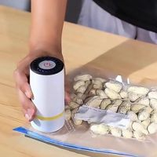
대충 싸 두면 공기 남는다면 충전식 미니 진공 펌프11,520원 · 살림템 #12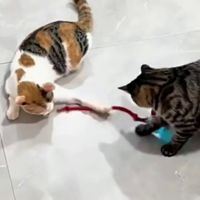
한 번 누르면 혼자 굴러가는 고양이 자동 공7,200원 · 반려템 #18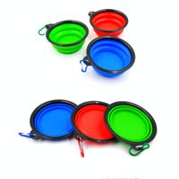
산책길 물 주기, 접어서 가방에 거는 그릇3,370원 · 반려템 #12외출할 때 강아지 밥그릇과 물그릇이 부피가 커서 가방에 넣기 어렵고 물 줄 곳이 없다
확인할 점다만 한 개입이라 밥이랑 물을 나란히 놓으려면 두 개가 편해요.
10.13 기준 가격이에요. 지금 가격은 판매처에서 확인해 주세요.
이 포스팅은 네이버 쇼핑 커넥트 활동의 일환으로, 판매 시 수수료를 제공받습니다.
네이버에서 보기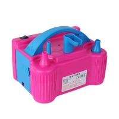
숨차는 생일 풍선, 노즐 두 개 전동 펌프59,890원 · 선물템 #1생일·파티 풍선을 입으로 불거나 수동 펌프로 부풀리느라 손과 숨이 많이 든다
확인할 점한쪽은 누르는 동안만 부풀어서 크기는 손으로 맞춰요.
10.13 기준 가격이에요. 지금 가격은 판매처에서 확인해 주세요.
이 포스팅은 네이버 쇼핑 커넥트 활동의 일환으로, 판매 시 수수료를 제공받습니다.
네이버에서 보기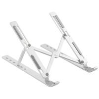
가방에 넣고 다니는 노트북 받침대12,900원 · 살림템 #5노트북 화면이 낮아 목이 아프지만 받침대는 부피가 커서 가방에 넣기 어렵다
확인할 점접으면 휴대폰 받침도 돼요.
10.13 기준 가격이에요. 지금 가격은 판매처에서 확인해 주세요.
이 포스팅은 네이버 쇼핑 커넥트 활동의 일환으로, 판매 시 수수료를 제공받습니다.
네이버에서 보기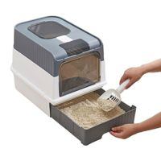
매일 쓸던 바닥 모래, 위로 나오는 후드 화장실12,000원 · 반려템 #9고양이가 모래를 뒷발로 차서 화장실 밖으로 흩어져 바닥을 매일 쓸어야 한다
확인할 점선반 밑만 피하면 충분해요.
10.13 기준 가격이에요. 지금 가격은 판매처에서 확인해 주세요.
이 포스팅은 네이버 쇼핑 커넥트 활동의 일환으로, 판매 시 수수료를 제공받습니다.
네이버에서 보기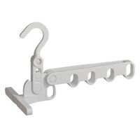
호텔 빨래 널 곳 없을 때, 여행용 접이 걸이1,840원 · 살림템 #10여행이나 출장에서 빨래를 널 곳이 없어 욕실 문고리나 의자에 걸쳐 말리다 떨어지거나 구겨진다
확인할 점옷걸이 다섯 개쯤 널 때 딱 맞아요.
10.13 기준 가격이에요. 지금 가격은 판매처에서 확인해 주세요.
쿠팡에서 보기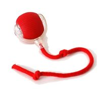
혼자 있는 낮, 굴러가는 볼 장난감7,200원 · 반려템 #15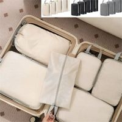
꾹 눌러 닫던 캐리어, 지퍼 한 줄로 두께 줄이기16,050원 · 생활템 #4여행 짐을 가방에 넣으면 옷과 소품이 뒤엉켜 필요한 것을 찾기 어렵고 부피도 줄지 않는다
확인할 점제일 큰 게 40센티라 캐리어 안쪽 길이만 재 보세요.
10.13 기준 가격이에요. 지금 가격은 판매처에서 확인해 주세요.
이 포스팅은 네이버 쇼핑 커넥트 활동의 일환으로, 판매 시 수수료를 제공받습니다.
네이버에서 보기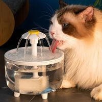
고인 물그릇 대신, 물이 도는 꽃 분수8,990원 · 반려템 #7고양이 물그릇 물이 금방 탁해져 자주 갈아야 하고 필터 관리도 번거롭다
확인할 점고인 물 대신, 물통 1200ml가 필터를 거쳐 돌아요.
10.13 기준 가격이에요. 지금 가격은 판매처에서 확인해 주세요.
쿠팡에서 보기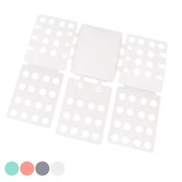
티셔츠만 삐뚤게 쌓일 때, 칸대로 접는 보드6,500원 · 살림템 #6셔츠와 티셔츠를 손으로 개면 모양이 흐트러져 서랍에 가지런히 넣기 번거롭다
확인할 점다만 색상 옵션만 확인하면 돼요.
10.13 기준 가격이에요. 지금 가격은 판매처에서 확인해 주세요.
쿠팡에서 보기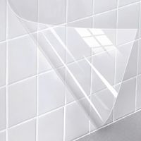
문질러도 누런 벽, 떼어 내는 투명 한 장11,990원 · 살림템 #9조리 중 벽에 튄 기름이 눌어붙어 닦아도 누런 얼룩이 남는다
확인할 점다만 롤 폭이 정해져 있으니 붙일 벽 높이만 재 두세요.
10.13 기준 가격이에요. 지금 가격은 판매처에서 확인해 주세요.
쿠팡에서 보기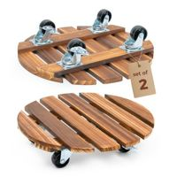
두 손으로 들던 큰 화분, 바퀴 받침대로 밀기17,900원 · 인테리어템 #3무거운 화분을 옮기려면 들어 올려야 해서 허리가 아프고 바닥에 끌면 자국이 남는다
확인할 점다만 물이 나무 틈으로 빠지니까 화분 접시만 받쳐 두면 돼요.
10.13 기준 가격이에요. 지금 가격은 판매처에서 확인해 주세요.
쿠팡에서 보기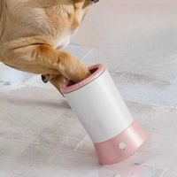
산책 후 발가락 사이 흙, 솔 컵에 넣어 닦기18,720원 · 반려템 #14산책 후 젖은 흙이 묻은 강아지 발을 수건으로 닦아도 발가락 사이가 더러워 현관 바닥이 지저분하다
확인할 점USB만 꽂으면 돼요.
10.13 기준 가격이에요. 지금 가격은 판매처에서 확인해 주세요.
이 포스팅은 네이버 쇼핑 커넥트 활동의 일환으로, 판매 시 수수료를 제공받습니다.
네이버에서 보기좁은 창틀 고양이 자리, 유리창에 붙이는 해먹12,900원 · 반려템 #13
고양이가 소파와 식탁 위로 뛰어 올라가 쉴 높은 자리가 없고 창가 자리도 좁다
확인할 점좁은 거실엔 창가에 판 하나 거는 방법도 있어요.
10.12 기준 가격이에요. 지금 가격은 판매처에서 확인해 주세요.
이 포스팅은 네이버 쇼핑 커넥트 활동의 일환으로, 판매 시 수수료를 제공받습니다.
네이버에서 보기그릇 밖으로 튀는 사료, 턱 있는 매트로 받기11,000원 · 반려템 #10
고양이 사료와 물이 식기 밖으로 흩어져 바닥이 매번 지저분하고 닦기 번거롭다
확인할 점S사이즈라 그릇 폭만 재 보세요.
10.12 기준 가격이에요. 지금 가격은 판매처에서 확인해 주세요.
쿠팡에서 보기올 나가는 소파 팔걸이, 긁던 자리에 붙이는 패드4,310원 · 반려템 #11
고양이가 소파 모서리를 긁어 천이 올이 나가고 찢어져 보기 흉해진다
확인할 점크기가 100에 30이라 팔걸이 둘레를 먼저 재 두면 편해요.
10.12 기준 가격이에요. 지금 가격은 판매처에서 확인해 주세요.
이 포스팅은 네이버 쇼핑 커넥트 활동의 일환으로, 판매 시 수수료를 제공받습니다.
네이버에서 보기남은 고기, 랩 대신 공기 빼서 세워 두기11,520원 · 살림템 #4
고기·간식을 개봉 후 공기에 노출시켜 금방 상해 남은 양을 버리게 된다
확인할 점셋, 밸브 봉지 10장이 같이 오니 한 끼씩 나눠 담으면 끝.
10.12 기준 가격이에요. 지금 가격은 판매처에서 확인해 주세요.
쿠팡에서 보기낚싯대 흔들 손이 바쁠 때, 바닥에 두는 깃털18,200원 · 반려템 #6
고양이가 혼자 있을 때 놀아줄 사람이 없어 장난감을 손으로 계속 흔들어야 한다
확인할 점깃털 물고 늘어지는 냥이라면, 옆에 있을 때 켜 두면 돼요.
10.12 기준 가격이에요. 지금 가격은 판매처에서 확인해 주세요.
쿠팡에서 보기엉키는 낚싯대 장난감, 바구니 대신 벽에 세우기15,100원 · 반려템 #5
고양이 장난감이 바구니에 섞여 바닥에 흩어져 원하는 장난감을 찾기 번거롭다
확인할 점후크만 따로 고르면 돼요.
10.12 기준 가격이에요. 지금 가격은 판매처에서 확인해 주세요.
쿠팡에서 보기바닥에 둔 샴푸병, 드릴 없이 벽 선반6,900원 · 청소템 #5
샤워 샴푸병을 욕실 바닥에 두면 물에 젖고, 드릴 없이 달 선반이 마땅치 않다
확인할 점셋째, 큰 샴푸병이라면 키부터 재 두면 돼요.
10.12 기준 가격이에요. 지금 가격은 판매처에서 확인해 주세요.
쿠팡에서 보기꽉 찬 조리대, 수납장 대신 전자레인지 위 한 칸23,050원 · 살림템 #3
브러시에 낀 머리카락, 손 대신 갈퀴8,500원 · 청소템 #2
빗과 헤어 브러시에 엉킨 머리카락을 손으로 뜯어내야 해서 매번 청소가 번거롭다
확인할 점후기론 씻기 편하대요.
10.12 기준 가격이에요. 지금 가격은 판매처에서 확인해 주세요.
쿠팡에서 보기털갈이 고양이, 빗 대신 장갑으로 쓸기5,860원 · 반려템 #4
고양이 털이 소파와 옷에 붙어 테이프로 떼도 잘 안 떨어진다
확인할 점23×16cm라서, 손 길이만 대 보면 돼요.
10.10 기준 가격이에요. 지금 가격은 판매처에서 확인해 주세요.
쿠팡에서 보기가스레인지 뒤 벽, 투명 필름 한 장4,900원 · 살림템 #2
가스레인지 뒤 벽에 기름이 튀어 닦아도 누렇게 얼룩이 남는다
확인할 점10m 롤이라 벽 가로·세로만 재 두면 돼요.
10.10 기준 가격이에요. 지금 가격은 판매처에서 확인해 주세요.
이 포스팅은 네이버 쇼핑 커넥트 활동의 일환으로, 판매 시 수수료를 제공받습니다.
네이버에서 보기세면대 위 치약, 벽에 거꾸로 걸기7,700원 · 청소템 #4
치약·폼클렌저 튜브가 세면대 위에 눕혀져 굴러다니고 끝까지 짜기도 번거롭다
확인할 점붙일 벽이 타일인지 먼저 봐 두면 편해요.
10.10 기준 가격이에요. 지금 가격은 판매처에서 확인해 주세요.
이 콘텐츠는 토스쇼핑 쉐어링크 활동의 일환으로, 링크를 통한 구매가 발생하면 일정 수수료를 지급받습니다.
토스에서 보기테이프 자국, 플라스틱 날 스크래퍼5,310원 · 청소템 #3
스티커·테이프 자국이 손톱으로 긁어도 안 떨어지고 칼로 긁자니 유리·타일에 흠집이 날까 걱정된다
확인할 점닳은 날은 리필 10개로 갈아 끼워요.
10.10 기준 가격이에요. 지금 가격은 판매처에서 확인해 주세요.
이 콘텐츠는 토스쇼핑 쉐어링크 활동의 일환으로, 링크를 통한 구매가 발생하면 일정 수수료를 지급받습니다.
토스에서 보기베란다 빨래 자리, 창가 흡착 건조대56,000원 · 생활템 #3
베란다 빨래 건조대를 안 쓸 때도 접어 두지 못해 벽 쪽 자리를 계속 차지한다
확인할 점붙일 창가 유리만 먼저 골라 두면 돼요.
10.10 기준 가격이에요. 지금 가격은 판매처에서 확인해 주세요.
쿠팡에서 보기티셔츠 개기, 손짐작 대신 접는 판5,900원 · 생활템 #2
빨래를 매번 반듯하게 개기 어렵고 서랍에 넣으면 옷이 흐트러져 자리를 많이 차지한다
확인할 점큰 셔츠가 많은 집이라면 판 크기만 확인해 보세요.
10.09 기준 가격이에요. 지금 가격은 판매처에서 확인해 주세요.
쿠팡에서 보기속옷·양말만 따로 돌리는 작은 세탁기59,000원 · 생활템 #1
속옷과 양말을 큰 세탁기에 다른 빨래와 같이 돌리기 찜찜하고 손빨래는 번거롭다
확인할 점소형이라 자주 빠는 집에 맞아요.
10.09 기준 가격이에요. 지금 가격은 판매처에서 확인해 주세요.
이 포스팅은 네이버 쇼핑 커넥트 활동의 일환으로, 판매 시 수수료를 제공받습니다.
네이버에서 보기진공 비닐 대신 지퍼팩, 뜯은 곡물 보관10,100원 · 살림템 #1
개봉한 식품 봉지를 집게로 물려도 공기가 차서 눅눅해지고 자꾸 풀린다
확인할 점중형은 26×28cm, 쌀이라면 대형이요.
10.09 기준 가격이에요. 지금 가격은 판매처에서 확인해 주세요.
쿠팡에서 보기신발장 한 칸에 두 켤레, 슈즈렉 정리6,355원 · 수납템 #3
신발장 칸마다 신발이 한 켤레씩만 들어가 금방 꽉 차고 남는 신발은 현관 바닥에 쌓인다
확인할 점칸 높이만 재 두면 맞추기 편해요.
10.09 기준 가격이에요. 지금 가격은 판매처에서 확인해 주세요.
이 콘텐츠는 토스쇼핑 쉐어링크 활동의 일환으로, 링크를 통한 구매가 발생하면 일정 수수료를 지급받습니다.
토스에서 보기창틀 레일 틈새 때, 물티슈 대신 V자 패드5,900원 · 청소템 #1
창틀 레일 틈새 먼지와 때가 걸레로는 닦이지 않는다
확인할 점창문 많은 집이라면 10개 돌려 쓰고 털어 말려요.
10.09 기준 가격이에요. 지금 가격은 판매처에서 확인해 주세요.
쿠팡에서 보기산책 후 흙 발, 물티슈 대신 세척컵10,800원 · 반려템 #3
산책 후 강아지 발의 흙과 오물을 닦아도 집 바닥에 발자국이 남는다
확인할 점리뷰에선 뒤집어서 목욕 솔로도 쓴대요.
10.08 기준 가격이에요. 지금 가격은 판매처에서 확인해 주세요.
쿠팡에서 보기고양이 모래 사막화, 빗자루 대신 벌집 매트8,750원 · 반려템 #2
고양이 화장실 밖으로 모래가 튀어 바닥에 흩어져 매일 쓸어야 한다
확인할 점빗자루 대신, 밟으면 구멍으로 쏙.
10.08 기준 가격이에요. 지금 가격은 판매처에서 확인해 주세요.
쿠팡에서 보기소파에 박힌 반려동물 털, 테이프 대신 밀어 모으기6,150원 · 반려템 #1
소파와 이불에 붙은 반려동물 털이 손으로 잘 안 떨어져 매일 치워도 남는다
확인할 점가죽 소파엔 테이프가 낫다는 리뷰, 천인지 확인해 보세요.
10.08 기준 가격이에요. 지금 가격은 판매처에서 확인해 주세요.
쿠팡에서 보기